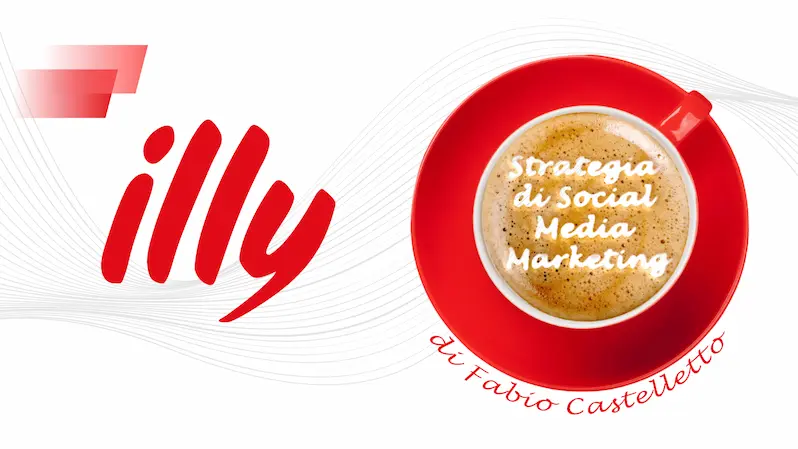

Ritratto generato con l'AI a partire da mie fotografie.
Per oltre vent'anni ho lavorato a contatto con le persone: prima come responsabile del reparto Home
Entertainment di un negozio acquisito successivamente da Euronics e poi come responsabile di settore nel negozio
di Trieste della catena MediaWorld. In seguito ho aperto in società Trieste-Bike, un'attività di vendita e
noleggio di e-bike sul Carso triestino.
Curando io stesso la comunicazione e i social dell'attività, ho scoperto la nuova passione: creare contenuti.
L'esperienza con i clienti mi ha insegnato qual è il vero valore aggiunto da offrire: la fiducia.
Da allora ho trasformato quella passione in un mestiere. Dopo il Master in Social Media ottenuto sulla
piattaforma Start2Impact, creo grafiche, video e testi che aiutano i brand a farsi scegliere, non solo a farsi
vedere. E so che la fiducia si conquista: lo dimostra il fatto che con una delle professioniste che seguo siamo
passati dalla diffidenza iniziale a un rapporto di lavoro che dura da più di due anni, costruito proprio
sull’intesa.
La fiducia è ciò che permette alle persone di essere davvero libere.
Competenze
Contenuti digitali
Grafica per i social
Video editing
Copywriting
Strategia per i social media
Meta Ads
AI generativa e prompt engineering
Relazione e organizzazione
Relazione con clienti e fornitori
Gestione delle persone
Problem solving
Autonomia decisionale
Inglese livello C1
Strumenti
Analisi e ricerca: Google Trends, AnswerThePublic, Semrush, SimilarWeb, PageSpeed Insights,
Meta Ads Library
Grafica e video: Canva, Photoshop, Illustrator, CapCut
Intelligenza artificiale: ChatGPT, Claude, Gemini
Esperienze
Digital Content Creator – Collaborazioni
Dal 2024 a oggi
Testi del sito web e contenuti per Facebook e LinkedIn di una professionista, che seguo da oltre due anni.
Gestione della pagina Instagram di un artista della scena musicale dal vivo, tra serate, eventi e locali.
Titolare – Trieste-Bike
2017–2024
Gestione dell'attività, della comunicazione e dei canali social.
Responsabile di settore Home Entertainment – MediaWorld
2002–2016
Gestione del reparto Home Entertainment, del personale e del rapporto con clienti e fornitori.
Responsabile reparto Home Entertainment – negozio poi acquisito da Euronics
1991–1997
Gestione del reparto, ordini con i fornitori, esposizione dei prodotti e vendita.
Stage in uno studio di grafica
2001
Primo contatto con la grafica professionale e con i programmi del settore.
Formazione
Master in Social Media – Start2Impact · 2022–2025. 17 progetti individuali valutati da
professionisti del settore.
Sviluppo web: HTML, CSS e JavaScript · in corso
Inglese livello C1 (QCER) – The British School of Trieste · 2009. Corso superato con
distinzione.
Master Executive in Grammatica italiana – UniD · 2026. 100 ore.
Diploma di Dirigente di comunità – Istituto Grazia Deledda · 1999–2000
Progetti
Una selezione dei lavori realizzati per il master e per le mie collaborazioni.

Strategia di social media marketing per illy caffè
Progetto finale del Master in Social Media · Start2Impact · 2025
Analisi della presenza digitale di illy e dei concorrenti Lavazza e Borbone, e una campagna per avvicinare
i giovani al tema della sostenibilità, con funnel, buyer personas, piano editoriale e contenuti per i
social.
Sconfiggere la fame: un video sull'Obiettivo 2 dell’Agenda 2030 ONU
Progetto del Master in Social Media · Start2Impact · 2023
Un video di un minuto per sensibilizzare sugli Obiettivi per lo Sviluppo Sostenibile delle Nazioni Unite,
in particolare sul secondo: sconfiggere la fame. Ho curato montaggio, testi e voiceover per raccontare in
modo semplice un tema complesso come la sicurezza alimentare e l'agricoltura sostenibile.
IncluDO, una comunicazione social tra tradizione e inclusione
Progetto del Master in Social Media · Start2Impact · 2023
Grafiche per i social di IncluDO, un'impresa sociale ipotetica proposta dalla piattaforma, che forma
migranti e persone svantaggiate nei mestieri artigiani dei borghi italiani. Ho sviluppato un'identità visiva
coerente per tre piattaforme: per Instagram immagine profilo, un carosello sui valori del brand, un post
promozionale e una story per un evento; per LinkedIn immagine profilo, copertina e un post per generare
contatti; per YouTube immagine profilo, copertina e thumbnail.
Grafica per promuovere una serata di Luca Lucchesi, artista della scena musicale triestina. Una palette
ridotta al nero, al bianco e al ciano, con una foto in bianco e nero, per un impatto immediato. Realizzata
anche in formato post social.